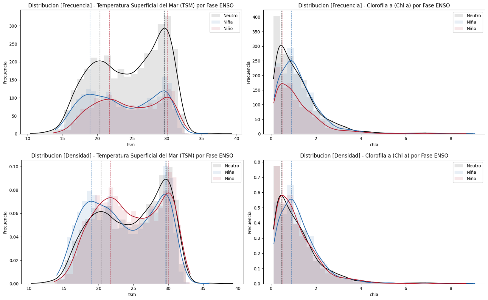
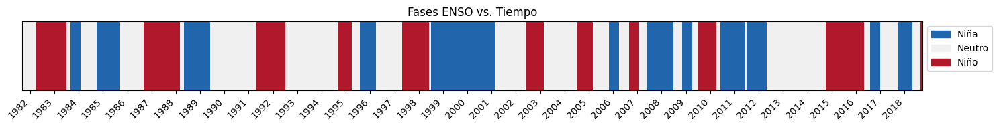
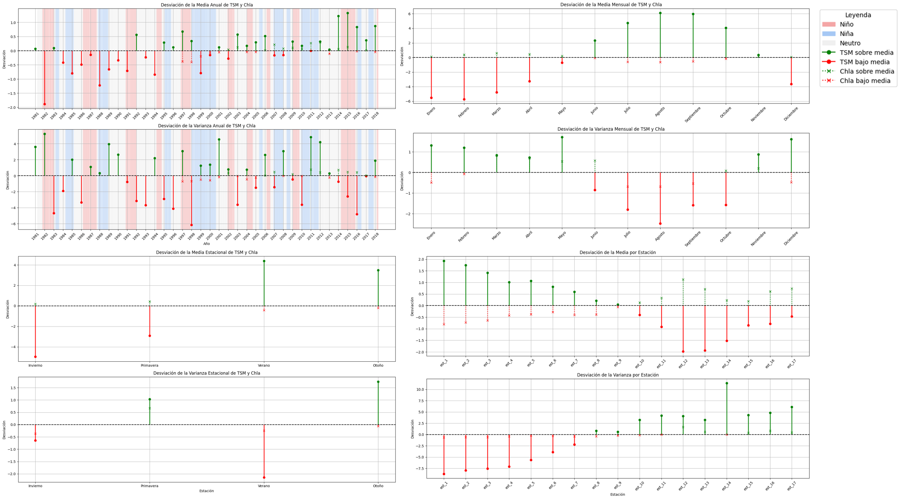
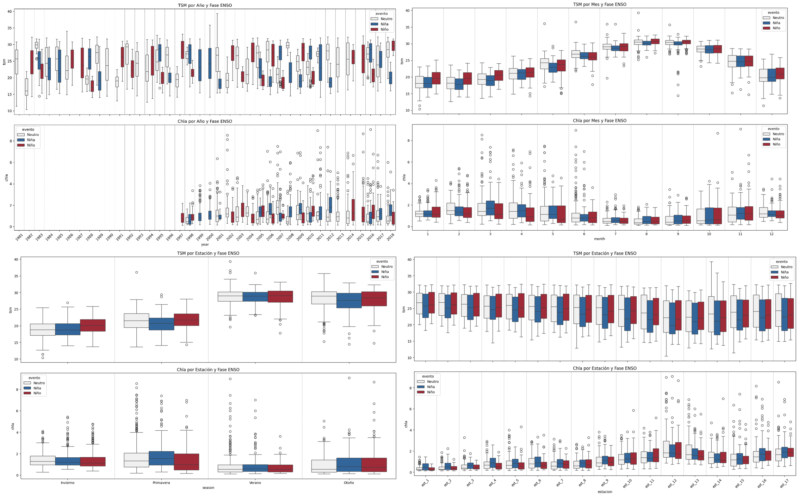
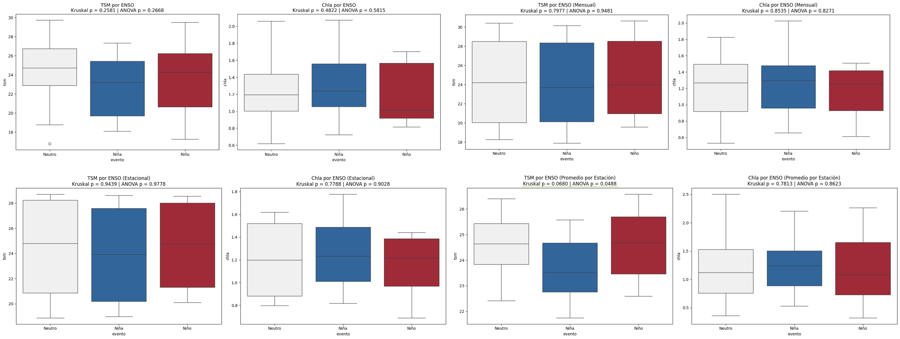
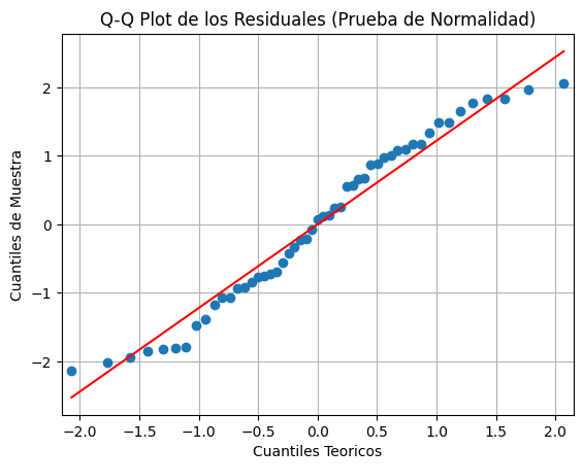
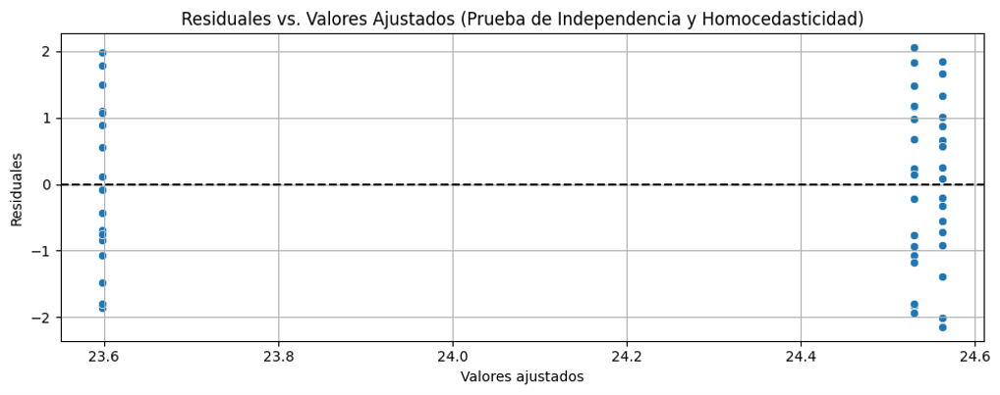
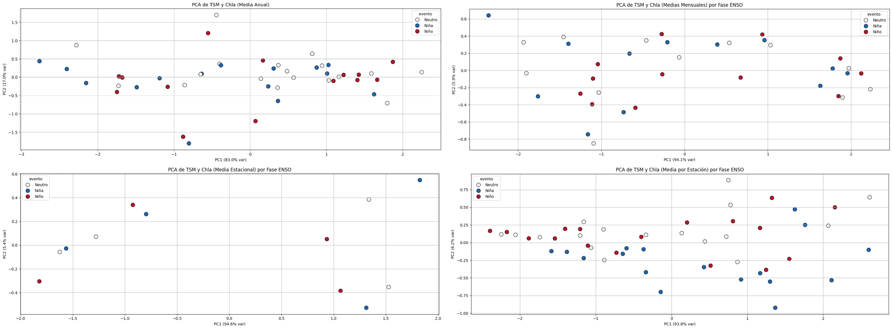
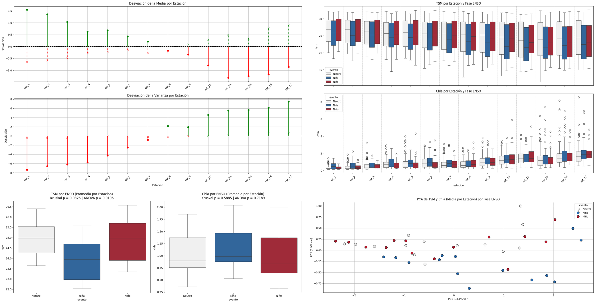

Analisis del Efecto de las Fases ENSO en TSM y ****Chl a** a**
Distribucion de las muestras segun Fase ENSO
Utilizando todas las muestras validas para ****TSM**** y ******Chl a** a**** a lo largo del periodo completo (1981-2018), y generando histogramas de frecuencia y densidad, uno para cada fase ****ENSO**** (Neutro, Niña y Niño), es posible destacar los siguientes puntos:
- La distribución de la TSM muestra una forma bimodal, con un pico alrededor de los 18–20 grados y otro en los 30 °C. Podria deberse a los cambios entre estaciones frías y cálidas, con alguna aportacion de las fases ENSO.
- En eventos Niño las TSM tienden a valores más altos, mientras que en eventos Niña se observan ligeros desplazamientos hacia valores más bajos.
- Para la ****Chl a** a, la distribución tiene sesgo hacia la derecha, con alta frecuencia en valores bajos. Los eventos Niña presentan niveles de Chl a a** un poco mayores en comparación con eventos Neutro y Niño. Esto podria significar una mayor presencia en temperaturas frías.
- A pesar de existir diferencias visuales en la distribución, la separación entre curvas no es muy grande, lo que podria sugerir que ENSO influye más no tiene un efecto directo o contundente en la variabilidad de TSM y ****Chl a** a**.

Es entonces que podriamos inferir que las fases ENSO sí inducen desplazamientos en las distribuciones de TSM y ****Chl a** a**, aunque los efectos varían en magnitud y dirección, dependiendo de la variable analizada.
Fases ENSO a lo largo del tiempo en el Golfo de California
Antes de analizar el efecto de las fases ENSO en ****TSM**** y ******Chl a** a**** respecto a distintos intervalos de tiempo, se considero podria resultar interesante visualizar los periodos que abarca cada una de las fases a lo largo de los años incluidos en los datos. Para ello se representaron barras con resolución de mes a mes, donde podemos visualizar aproximadamente cuando comenzó una nueva fase y su duración.

Es notorio como se han tenido multiples periodos para cada una de las fases ENSO, predominando los periodos neutros.
Los periodos de fase Neutra suelen alcanzar mayores duraciones, de aproximadamente 2 años, solo competido por un periodo de fase Niña entre 1998 y 2001, el resto para Niña y Niño suelen estar por debajo del anio y medio de duración.
Desviacion para TSM y ****Chl a** a** respecto a la Media y Varianza Media por agrupamientos temporales y espaciales
De acorde a los objetivos específicos del proyecto, se optó por agrupar los datos por distintos criterios temporales y espaciales.
Los grupos fueron:
- Interanual (Temporal - Comparativa entre años)
- Intraanual (Temporal - Comparativa por meses del anio)
- Estacional (Temporal - Comparativa por las 4 estaciones climatologicas del anio)
- Por Estacion de Medicion - (Espacial - Comparativas por las 17 estaciones de medicion ubicadas en el Golfo de California)
A continuacion se muestra una figura que contiene dos graficos de paleta para cada grupo. Cada gráfico contiene la información tanto de la TSM como de ****Chl a** a**, sin embargo la diferencia reside en que el gráfico ubicado en la parte superior muestra la desviacion respecto a la Media de los valores propios de cada variable, mientras que el gráfico de la parte inferior muestra la desviacion respecto a la Media de la Varianza para cada variable.

Observaciones por cada grupo:
- Interanual:
- Se ven desviaciones negativas de la TSM en años con eventos Niña (1989 o 1999), haciendos sentido baja de temperatura usual de esta fase.
- Durante eventos Niño (1997 o 2015), las desviaciones de TSM son en su mayoria positivas, indicando un incremento de temperatura significativo.
- La Chl a tiene puntos de mayor variabilidad, pero disminuye en eventos Niño.
- Intraanual:
- Los meses de verano (jul-sept) muestran desviaciones positivas más notorias en la TSM, concordando con el ciclo estacional y ademas podría estar acentuado en algunas instancias por eventos Niño.
- La ****Chl a** a** muestra desviaciones negativas durante la segunda mitad del año, lo que podría relacionarse al incremento en la TSM.
- La TSM responde en mayor medida al ciclo estacional, ****Chl a** a** muestra un comportamiento menos lineal o proporcional.
- Estacional:
- Verano muestra las mayoria de las desviaciones positivas de la TSM.
- Primavera e invierno muestran desviaciones negativas en ****Chl a** a** (menos calor y luz?)
- El otoño es interesante puesto que mientras la TSM se mantiene estable, la ****Chl a** a** tiene mayor dispersión. Esto podria indicar la presencia de factores que no estamos contemplando.
- Por Estacion de Medicion:
- La desviación de la TSM tiene diferencias entre estaciones, aunque reducidas. La distribucion parece ser más amplia en estaciones cercanas al norte.
- Las estaciones de medicion al norte del Golfo muestran mayor variabilidad en ****Chl a** a** (geografia ?).
- Esto sugiere que la variabilidad entre estaciones de medicion para la ****Chl a** a** es más marcada que para la TSM.
Variacion en distribucion en relacion a tiempo y estaciones
Sabemos que la distribucion de los datos varia al categorizar por fase ENSO, y tambien se identificaron algunos patrones de cambio con los graficos de paleta.
Un proximo paso logico es analizar el cambio en la distribucion de los datos agrupados nuevamente por fase ENSO, pero a traves de los grupos espacio-temporales que estamos trabajando.

En este conjunto de graficos de caja podemos observar que:
- La ****Chl a** a** presenta una gran cantidad de valores extremos y outliers, especialmente durante eventos Neutro. Esto podria significar que hay otros factores que sobresalen cuando no hay eventos Niño o Niña.
- La comparación por mes refuerza el efecto del ciclo anual sobre el aumento en la media de la TSM, con valores consistentemente mayores en verano y otoño, mientras que ****Chl a** a** parece tener un efecto de reducir la variabilidad en ese mismo periodo.
- Al verlo por estaciones de medicion observamos que tanto la media de la TSM como de la ****Chl a** a** varian dependiendo la estacion, pero responden a las fases ENSO de forma variada y sin un efecto dramatico.
Distribucion de las muestras segun Fase ENSO
En pasos previos, se profundizo un poco y se logro una mejor idea del comportamiento de las variables de la TSM y los niveles de Chla versus fases ENSO. Ahora bien, resulta interesante dar otro vistazo macro, agrupando el total de las muestras de ambas variables por grupo espacio-temporaln y por fase ENSO en graficos de caja.

Aqui se puede observar como:
- Los gráficos de caja permiten confirmar que el efecto de las fases ENSO es más notorio en TSM, con eventos Niña mostrando valores consistentemente más bajos.
- La ****Chl a** a** no presenta diferencias tan marcadas entre fases ENSO en la mayoría de agrupaciones.
- La única excepción estadísticamente relevante es el caso de la TSM por estación de medición, donde se obtuvo un p-valor de 0.0488 (ANOVA), sugiriendo diferencias significativas entre fases.
Como se menciona en el ultimo punto, ademas de los graficos, se realizaron analisis de varianza: ANOVA (parametrico) y Kruskal-Wallis (no parametrico). Los resultados se encuentran ubicados debajo del titulo de cada gráfico.
Es claro inspeccionando visualmente y en los p-valores resultantes de los analisis, que en la mayoria de los escenarios no existe una varianza notoria entre las medias de cada agrupación por fase ENSO. La excepcion es el caso de la TSM al agrupar los datos por estacion de medicion, y por fase ENSO.
Ahi se observa como los eventos Niña si aparentan una media más baja que el resto. Y los p-valores son muy cercanos al 0.05, de manera que hemos de ir nuevamente de lo general a lo particular, y validar los supuestos del ANOVA, de manera que determinemos la validez de lo observado.
Pruebas - Validacion de Supuestos para ANOVA
Prueba de Shapiro-Wilk (Normalidad)
Shapiro-Wilk: W = 0.955, p = 0.0512
El valor de p = 0.0512 indica que no se puede rechazar la hipótesis nula de normalidad de los residuales al 95 % de confianza, aunque se encuentra justo en el límite. Esto sugiere que la distribución es aproximadamente normal, pero se debe complementar con visualizaciones.
El Q-Q plot muestra que los residuales se alinean bien con la línea de referencia, reforzando la validez del supuesto de normalidad.

Prueba de Levene (Homocedasticidad)
Levene: W = 0.295, p = 0.7460
El valor p = 0.7460 en la prueba de Levene indica que no hay evidencia suficiente para afirmar que las varianzas son distintas entre grupos, por lo tanto se asume homocedasticidad.
El gráfico de residuos vs. valores ajustados no evidencia patrón alguno ni heterocedasticidad, lo que respalda la validez del modelo ANOVA.

En conjunto, los supuestos del ANOVA se cumplen de manera razonable, generando mayor confianza al resultado encontrado en la TSM por estación de medicion versus fase ENSO.
Pruebas con Analisis de Componentes Principales (PCA)
El análisis PCA para cada una de las agrupaciones espacio-temporales que hemos estado manejando revela que las dos primeras componentes explican entre 90–95 % de la varianza en la mayoría de los casos. Esto podria representar una alta capacidad de resumir la variabilidad.
Aunque no se observa una separación clara entre fases ENSO, si es posible apreciar una agrupación parcial de eventos Niño y eventos Niña hacia valores positivos y negativos del PC2, respectivamente.

Esto podria sugerir que el ENSO tiene un impacto multivariado, pero que dicho impacto puede estar enmascarado por factores verse favorecida con variables adicionales (geograficas, climaticas, etc.).
Adicional - Repeticion de Pruebas Eliminando Estaciones de Medicion 12, 13 y 14
Se optó por realizar una prueba adicional con el caso estadisticamente significativo de TSM en Estaciones de Mediciones con fases ENSO. Se obtuvieron los siguientes resultados:

Podemos ver que a pesar de la eliminacion de estaciones, este caso sigue resaltando, pues ahora inclusive se redujeron más los p-valores para los analisis de varianza ANOVA y Kruskall-Wallis.
Esto sugiere que el efecto de las fases ENSO puede ser distinto en distintas zonas del Golfo de California, en este caso el evento Niña mostrando mayor influencia en las estaciones de medicion del norte.